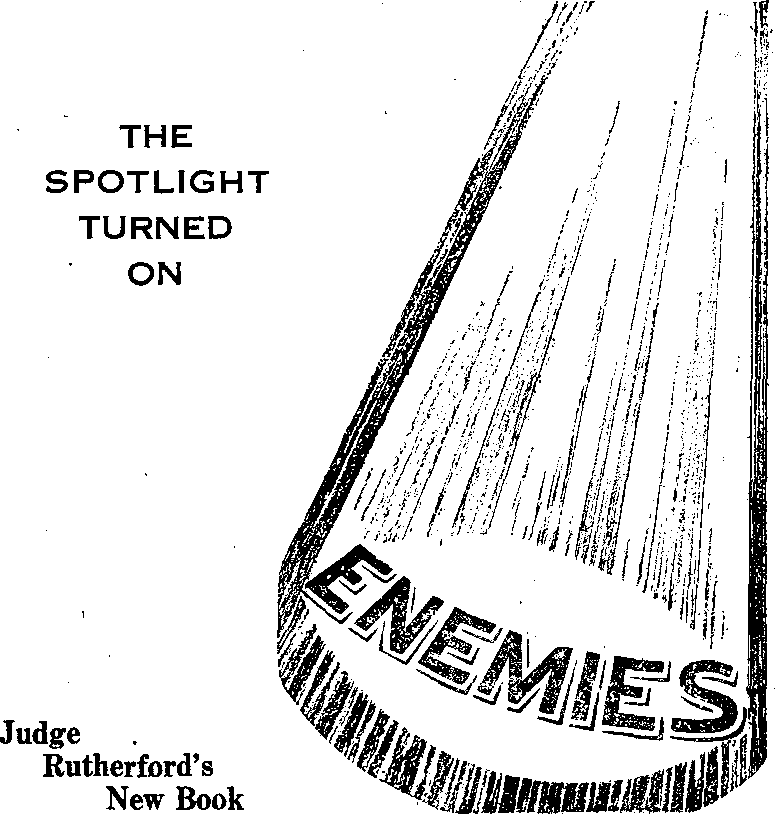

The Golden Age's New Name—Consolation 3
What Is Breaking Up the British
By Trail and Stream and Garden Path 13
Unusual Experiences with Animals 14
Vivisection and the Vaccine Peddlers 15
Consolation Interviews Judge Rutherford 17
Published every other- Wednesday by
THE GOLDEN AGE PUQLISHING COMPANY, !NC. lit Adams St., Brooklyn, N. V., U. S. A.
President Clayton J. Woodworth
Vice-President Nathan H. Knorr
Secretary and Treasurer Charles E. Wasner
Five Cents a Copy
fl a year in the United States 11.25 to Canada and all other countries
NOTICE TO SUBSCRIBERS
Remittances: For your own safety, remit by postal or express money order. When coin or currency is lost In the ordinary malls, there is no redress. Remittances from countries other than those named below may be made to the Brooklyn office, but only by International postal money order.
Receipt of a new or renewal subscription will be acknowledged only when requested. Notice of Expiration Is sent with the journal one month before subscription expires. Please renew promptly to avoid loss' of copies. Send change of address direct to us rather than to the post, office. Your request should reach us at .least two weeks before the date of Issue wtth which ft is to take effect. Send your old as well as the new address. Copies will not be forwarded by the post office to your new address unless extra postage Is provided by you.
Published also in Bohemian, Banish, Dutch,. Finnish, French, German, Greek, Japanese, Norwegian, Polish, Spanish, Swedish.
OFFICES FOR OTHER COUNTRIES
England 34 Craven Terrace, London, W. 2
Canada 40 Irwin Avenue, Toronto 5, Ontario Australia 7 Beresford Road. Strathfleld, .N.S.W. South Africa 623 Boston House, Cape Town
Entered as second-class matter at Brooklyn, N. T., under the Act of March 3, 1873.
❖ An hour and three-quarters of foolishness was enjoyed by all when “military mass” was celebrated at Fort Jay, to commemorate the 300th anniversary of the purchase of Governor’s Island from the Indians. Everything was as strictly Roman Catholic as could be desired, including the rolling of drums, bugle salute, saluting the flag, etc., when the idolatry was at- its height. The speaker, “Reverend Father’’ William B. Martin, pastor of Holy Family Church, New Rochelle, N. Y., called for a crusade against “the forces of atheistic Communism”, and then spoiled it all, for the Hierarchy and for himself, by referring to ‘1 the rack and the caldron of boiling oil ’ The less the Hierarchy has to say about things like that, the better off it is. It should keep still.
❖ Explaining Chicago’s municipal government, Westbrook Pegler says entertainingly:
Sometimes by mistake they may put some tax figures in one of these ledgers, but they never try to balance them, because you can imagine the confusion you would get if you should foot up the morning line at Hialeah, plus ten miles of pavement at so much per mile, plus the last election returns, divided by the telephone number of a girl named Edna (if man’s voice answers, hang up). If a Grand Jury begins to ask foolish questions they tear the pages out of the books and paint the walls over, and if a private citizen gets too fresh they indict him—not anybody in the administration.
♦ The Staten Island Zoological Society re- j eeived some great snakes from the Malay peninsula. Among them were one variety that cranes its neck like a chicken and growls like a dog, three others that travel under water, and fifteen that climb walls and ceilings. Also, •? there are five temperamental snakes that hate the light and are happy only when hidden from sight, in caves. Great snakes! Also, interestingly; there were more than twice as many snakes when they arrived as when they were shipped; Great snakes!
“And in His name shall the nations hope.”—Matthew 12:21, A.R.V,
Voturrie XtX
Brooklyn, N.Y.r Wednesday, October 6, 1937
Number 471
APPEARING in this issue in a new dress, The Golden Age, on its eighteenth anniversary, takes a new name, a Scriptural one. This does not mean, however, that this will be a religious magazine. The old name suggested religion and tradition; the new name stands for truth.
In the mythical Roman golden age all was peace, happiness and contentment, the earth yielded its fruits spontaneously and spring was eternal; and while it is true that there is here a hint of the paradise that was lost in Eden, and which will be restored; and while it is also true that the Romans had a legend that the mythical golden age would sometime return, why continue to use a legendary or religious name, when a better name, a Scriptural one, may be had in its place?
Since the Lord Jesus has come to the temple and the Day Star has arisen in the hearts of God’s “remnant”, and He is being revealed also to the “great multitude”, it is not appropriate to appear to continue to look for a return of a mythical golden age such as mythology alleges existed in Rome when the heathen god Saturn ‘kept men free from bodily infirmities or the necessity of labor’. The word saturnalia is derived from the name Saturn. ,
The Golden Age has been a consolation to many: their letters, though appreciated, are not published; the magazine speaks for itself. It is the intent to make it better with every issue; indeed, that has always been its motto. If the maga-
ACTOBER 6, 1937 zine was appreciated before, it will be more appreciated hereafter; and there will be some new features. No need to tell you. Look!
“Consolation” is solace in compact, intensive form. The Hebrew tahnkhoom and Greek paraklesis (calling alongside for help) occur 32 times in the Scriptures and are, in the Common Version, translated sixteen times by the English word “consolation”, derived from the Latin solari, meaning solace. May the new name of the “Journal of Fact, Hope and Courage” be prophetic of the place it will occupy in Jehovah’s organization in the stirring years that are just at hand!
“Waiting for the Consolation”
For centuries Jehovah’s people have, like the just and devout Simeon, been “waiting for the consolation of Israel” (Luke 2:25), and their hearts’ desire has been gratified. The Kingdom has come; Jesus, as a divine spirit, is here, ruling in the midst of His enemies.
“Rejoice ye with Jerusalem [God’s organization], and be glad with her, all ye that love her: rejoice for joy with her, all ye that mourn for her: that ye may suck, and be satisfied with the breasts of her consolations; that ye may milk out, and be delighted.” (Isaiah 66:10,11) This magazine hopes to have a share in dispensing these blessings of consolation.
Truth on any subject is a consolation. It is of no use for anyone to think he loves God if he does not love the truth, David voiced the attitude of all Jehovah’s people when he said, “In the multitude of my cares within me, thy conso la items delight my soul.” (Psalm 94:19,
Rotherham) This magazine is intended to be a delight to the souls of those who love the truth. ,
Consolation in the Early Church
The persecutions of the early church were not continuous; they came in Spasms, as they do now. After the opening of the eyes of Saul, who became Paul the apostle, the account says; ,
Now the church had peace throughout all Judea, and Galilee, and Samaria; and was edified, walking in the fear of the Lord, and was filled with the consolation of the holy [spirit].—Acts 9: 31, Douay.
In between the persecutions now ■ visited upon Jehovah’s faithful people, this magazine hopes to comfort the persecuted by declaring their experiences to the world, and pointing to their faithfulness as proof that Jehovah has people in the earth that maintain their integrity. .
The people of God were looking for consolation in the days of Paul and Barnabas (which latter name means “Son of consolation’1') t for when those two witnesses came to Antioch in Pisidia and went into the synagogue and sat down, after the Scripture reading the rulers of the synagogue sent to them saying;
Men brethren, if is a word in you of consolation to the people, say you.—Aets 13115, Diag'ott. interlinear.
Paul gave them a grand discourse on that occasion, but although they knew they needed consolation some wrere not willing to have it in God’s way; they wanted it some other way. And that will sometimes be true with some of the readers of this magazine. It won’t suit everybody; it isn’t intended to serve as a men^ pleaser, but just to witness against the Devil’s organization and for the Lord’s organization the very best it can, in every issue. If you like it, O.K.,- if not, O.K. The very issue you care for least may be the issue someone else will appreciate most.
“Rejoiced for the Consolation”
On a certain occasion the people of God at Antioch were much troubled about some matters connected with their Earthen tabernacles.
Their difficulties were straightened out by an epistle, “which when they had read, they rejoiced for the consolation.” (Acts 15:31) Now and then some of the things that appear in this magazine will, it is hoped, bring just such encouragement to its readers, on this subject or on that. It has been so in the past; why not in the future?
Sometimes this magazine will be reproached for not being “ nice ’ ’ to the Devil’s organization, like other “nice’’ magazines. What will happen then? Oh, nothing much, except that somebody is going to get a blessing out of it:
As it has been written, “The reproaches of those who reproached thee fell on me.” For what things were before written for our instruction, were written that we through the patience and the consolation of the scriptures might possess the hope. And may the God of that patience and that consolation give you the same disposition towards each other, according to the Anointed Jesus,—Romans 15: 3-5, Diaglott.
The apostle Paul believed that the things that happened to him were good not only for himself but for others also. Hence he said:
And whether we be afflicted, it is for your consolation and salvation, which is effectual in the enduring of the same sufferings which we also suffer; or whether we be comforted, it is for your consolation and salvation. And our hope of you is stedfast, knowing that as ye are partakers of the sufferings, so shall ye be also of the consolation. —2 Corinthians 1: 6,7.
Depending on the Higher Powers
This magazine constantly depends upon the ' Higher Powers; if you do not know who they are, and read the magazine long enough, you will surely find out. There is a text which shows where is mankind’s real consolation, and which, therefore, should not be omitted.:
If there be therefore any consolation in Christ, if any comfort of love, if any fellowship of the spirit, if any [tenderness] and mercies, fulfil ye my joy, that ye be likeminded, having the. same love, being of one accord, of one mind. Let nothing be done through strife or vainglory; but in lowliness of mind let each esteem other better than themselves, Look not every man on his own things, but every man also on the things of others. Let this mind be in you, which was also in Christ J feus.—Philip-pians 2:1-5. ’ ■ ■;
The magazine Consolation is the product of many minds. Jehovah’s people all over the earth send in their own contributions, clippings, books, pamphlets, cartoons, newspapers and other materials, each doing what he can to present the evidence that the Judgment Day is here, the Judge is trying the hearts of all men, the sheep are being divided from the goats, and the wind-up of Satan’s kingdom is, at the door.
There is never any intent to misstate or misrepresent anything, to cover up anything that should be uncovered, to step haltingly and timidly up from Gilgal in the night, or to shrink from shouting from the housetops the truths set forth in the Watch Tower publications.
There is no disposition to curry favor with men by concealing the work of Jehovah’s witnesses. If they want to read about what these witnesses are doing, all O.K. If they don’t want to read the facts, that is their privilege.
Consolation is not trying to make religious converts; it is intended for those that cry and that sigh for the abominations being done in the earth, and to be a witness to the Most High God, that the hope of the whole world is in His great King, Christ Jesus the Lord, now upon His throne.
“Everlasting Consolation” in Sight ' 'To some people consolation would mean a furtive wiping away of tears, and considerable petting and coddling. In the public press of June 10, 1937, the pope, confronted by exposures of sodomy among the Roman Catholic priests in Germany, is pictured as “laden with emotion” and “tears streaming down his
cheeks”, while saying to a German Catholic delegation: '
It is a consolation for us to weep with you and to console you as a father does his sons who are being severely tried.
That is not the kind of consolation that Jehovah gives. He wipes away the tears by giving to the sorrowing ones “the oil of joy for mourning, the garment of praise for the spirit of heaviness”. (Isaiah 61:3) In other words, He shows that the real consolation comes from engaging in the work entrusted now to the people of God, and in which all people of good will may co-operate. Consolation will always be found doing all possible to help to that end, so that, trusting in the Higher Powers, we might have a strong consolation, who have fled for refuge to lay hold upon the hope set before us.-—Hebrews 6:18.
Now our Lord Jesus Christ himself, and God, even our Father, which hath loved ns, and hath given us everlasting consolation and good hope through grace, comfort your hearts, and stablish you in every good word and work.-—2 Thessalonians 2:16,17.
Jehovah’s people will be interested to know that when a committee had up the project of selecting a new name for the “Journal of Fact, Hope and Courage”, and lists were made of possible titles, and, for one reason or another, were found unacceptable, either because misused by others or conveying a wrong impression, the committee finally found most pleasing of all the first name on the list submitted by Judge Rutherford, and the subtitle which accompanied it.
And so, henceforth, the “Journal of Fact,
Hope and Courage” is Consolation, and while with reason it unhesitatingly claims to be the best general all-round magazine in the world, it is such not because of the approval of pope or cardinals, but in the strength of the great Consoler, Christ Jesus, the hinge upon which swings the gate of the paradise of God. ‘‘In his name shall the nations hope.”—Matthew 12:21, A.R.V., margin.
Nobody will ever have “a better hope” (Hebrews 7:19) than “that blessed hope” (Titus 2:13), “Jesus Christ . . . our hope.” —1 Timothy 1:1. ,
Let all who have thus far helped The Golden Affe now help Consolation to be a real solace, both as to its contents and as to its distribution among the great multitude now seeking the way to life and true happiness.
♦ Those' interested in making Consolation the world’s best magazine should send in snapshots along with their manuscripts, not afterward. A fine lot of material from Georgia was followed many days later by photographs which would have been very useful had they come with the manuscript. The cartoonist’in-timates that he is interested in seeing photographs in this life. If intended for him in his future estate one wonders why they were printed on paper!
♦ In an address at Orillia, Ontario, Premier Mitchell Hepburn, of the Ontario government, asserted that John L. Lewis, head of the C.I.O., is collecting $36,000,000 annually in dues and that he thinks Roosevelt unduly influenced by Lewis’ gift of $500,000 to the last Democratic campaign fund.
Mr. Hepburn contrasts President Roosevelt’s acquiescence with Lewis’ present activities with his expressed condemnation of the massacre at Herrin, Illinois, in June, 1922, of 19 menders of the s team-shovel men’s union by 500 union miners then under Lewis’ control. Fifty of these men were on their way home under a flag of truce, and a promise of safe conduct, when the United Mine Workers lined them up against a barbed-wire fence and fired upon them, killing 19" and wounding 20. The evident intent was to, murder them all. Nothing was ever done about it. There seldom is. ’ ■ '
♦ Only 4,044 American soldiers were killed in the American Revolution, but in the year 1935 alone, in the United States, seven times that many persons were killed by automobiles.
♦ Representative John J. O’Connor, of New York city, chairman of the House Rules Committee, is of the expressed opinion' that “America should still be the sanctuary of all peoples fleeing persecution”. Seems like a good idea, and if the representatives of the Hierarchy, and other self-advertised patriots, will just say where the persecuted people of Jehovah God can flee from Massachusetts, New Jersey, Pennsylvania, Georgia, Illinois, Texas, California, Washington, and Florida, maybe something can be done about it.
♦ Police at Tulsa, Oklahoma, received a telephone tip that there were seven gangsters in a downtown building. They surrounded the building and waited. At length seven ministers from Yankton, South Dakota, came out, got into two automobiles and were driven away. There were no arrests.
♦ The Sydney (Australia) Herald contains the information that the chief film censor of Australia is W. Creswell O’Reilly. Guess his “church”; .
CONSOLATION
THE SOUTHERN CROSS, a Catholic newspaper published at Cape Town, South Africa, acting editor, Reverend B.
Gavan Duffy, S.J., after admitting that the common people of England are mainly Protestant, explains how their leaders, educated at Eton and Harrow and Winchester, have gradually betrayed them;
Britannia—an unent husias tie candidate for the Fascist operating table
An extraordinarily high percentage of Catholics is found among the senior advocates, from whose ranks the judges are drawn. The biggest and most expensive modern church buildings in England are Catholic. Still more important is the fact that the majority pf the old English nobles in the House of Lords remain Catholic. The proportion issaid to be seventy-five percent. ... It is well known that English foreign affairs, particularly the Foreign Office itself, are in the hands of Roman Catholics. Since the members of the higher nobility play an important role as governors and viceroys, and occupy several key positions at home, the astounding fact emerges that within the ranks of the ruling classes England has remained far more Catholic than many a purely Catholic country.
Where the Roman Hierarchy cannot rule tyrannically, but must play second fiddle, it is always willing to get down and wallow in the dirt if by any means at.all it can creep up one inch toward prominence. This was seen at the British coronation ceremonies. The Roman Catholic archbishops and bishops of Great Britain wanted to affirm the loyalty of Roman Catholics to the realm, but were told in so many words that their titles and territorial designations are bogus and for that reason they could not be used in any official communications acceptable to the king.
Nevertheless, the Guild of Roman Catholic police in London is said to have a membership of more than 1,000, and in the last 50 years the number of Roman Catholic churches in England has nearly doubled while the number of priests has more than doubled.
Ireland’s Brand of Fascism
Belfast, Northern Ireland, is in terror from acts of the Irish Republican Fascist (Catholic Action) Army. Men are being shot even in the daytime, openly, but, though the murderers are well known, nobody dares to give their names, for fear they will be next on the list of victims. On occasions the assassins walk into a man ’s house in the night and shoot him as he sleeps, without giving him the ghost of a chance. Eighteen such deaths have taken place recently, and in every case the assassins escaped arrest.
In the census of the Irish Free State of ten years ago 92.6 percent of the people were found to be Roman Catholics, and the remainder, of other faiths, mostly Church of Ireland Episcopalians, Presbyterians, Methodists, Baptists, and Jew’s.
Once one of the most prolific of countries, Ireland lost 6,138 of her population in the last ten years. More people emigrated from the United States to the Irish Free State than vice versa. Part of the Irish Free State’s loss of population is attributed to the fact that 78,130 persons emigrated to England and Scotland in the last ten years. Irish lads do not marry until 35.
In the past ten years the Irish emigration to Great Britain was 78,130. The population of Dublin, 587,000. is now one-fifth that of the entire country.
Liverpool is becoming Catholic by the very simple procedure of Ireland’s making England support her surplus population. There are a quarter of a million Irish in Liverpool, and they continue to come every year because the poor-allowance in Liverpool is greater than it is in Dublin. Meantime the Hierarchy urges Irish fathers and mothers to have all the children possible. That means more Catholics, with ultimately greater revenues and greater power for the “Church”.
The old guard
"With the outbreak of war in the Spanish pen insula some of those who were pioneer witnesses there, including E. Cooke and J. II. Corr, are now devoting their energies to magnifying God’s name in the Emerald Isle. Naturally a generous and warmhearted people, the Irish have been turned into unreasonable bigots by long subjection to the Roman Hierarchy.
Every reader of Consolation will be interested in the following report by Mr. Cooke of some of the experiences which he and his fellow witnesses have undergone in Ireland in their efforts to enlighten that unfortunate people, and will admire the courage and devotion to Jehovah which prompts men to circulate among a blinded and bigoted people such a dodger as is reproduced following Mr. Cooke’s letter.
Jehovah’s witnesses in the Irish Free State are having warin times. The tools of the Devil are incited to attack the witnesses and destroy their literature, and when such breaches of the peace occur the witnesses, and not the miscreants, are arrested for “conduct calculated to lead to a breach of the peace”.
There are evidences on every hand of the Devil’s mimicry, in attempting to divide the people into Catholics and Communists. The Catholic press has gone crazy over the “menace of Communism” in Ireland and in every other land—all as an excuse to grab world power.
The uneducated swallow it all, with the result that books explaining the Bible are considered to be Communistic ; this is the camouflage with which the priests cover their efforts to stop the work. When their misguided myrmidons raid us they refuse to believe our reiterations that we are not Communists, and they even decline to examine the hooks, to see for themselves.
I asked one, “What is a Communist?” He said, “All I know is you are one.” We are told to go back to Russia, and even civic guards have accused us of being Russians. It is queer that in Spain we were mobbed ‘for being Fascists’, and now in the Irish Free State we are called Communists.
In a raid at Castledermot we were stopped outside the village while we were eating our sandwiches and were prevented from reporting the matter to the local police headquarters.
In a raid at Timolin a mob surrounded the house at 8:30 p.m. and threatened to break down the door if we did not open to them. They searched painstakingly, and, of course, in vain, for evidence connecting us with Moscow. In addition to seizing all our literature, and burning it, they took our three Bibles, a Year Book and other personal papers.
Even after the police came, the raiders persisted in retaining their booty, and when outside gave three cheers for the pope and their Irish bishops. The next morning six men called and said they had been commissioned to see us out of town, and
no food would be allowed until we left. Talk about Catholic Action!
At Clane, ten miles away, Jehovah’s witness John Henry Corr was visited by four masked men, but when the landlord, started to take off his eoat they climbed over the fence and disappeared. Two days later the whole town council came at night and demanded that Jack should leave town.
At Naas the raiders came at 9:30 p.m., when the town was quiet. Our Watchtowers, a Golden Age and some letters, as well as all our stock, were seized and we were hustled out of town the same night and prevented from notifying the police.
When the cases got into court the district justice was most unfair, refusing to postpone until counsel could be obtained. It was obvious that the superintendent of .police wished to rush a conviction—a willing tool of the Hierarchy indeed. The innocent were sentenced to two months in prison, but are outran bail.
You may sail in, boys, but mind—rio intervention
The battle is indeed taxing fiercer and fiercer, and if we were not sure of Jehovah’s protection over us we should be dismayed. But the spiritual food of recent months has prepared us for these things, and "forewarned is forearmed”.
VERY IMPORTANT
The Roman Catholic Church is a very great organization. It is composed of and ruled by the Hierarchy, that is, a few men most of whom reside in Italy and who are Italians. The millions of sincere persons who support the organization are not members of the Catholic Church, but are designated by the Hierarchy as
“The Catholic Population.”
- There are a few important priests in every country, but most of the priests perform menial service, collect the money, and send it to the higher-up men of the Hierarchy, who use it as they see fit.
The people of the “Catholic population” are very sincere and are easily deceived by those who reap the money profit.
The Hierarchy participates in the polities of every nation and works with dishonest politicians and dictators to keep the people down and in subjection. October e, 1937
They control Germany, Austria, Italy, and are now trying to grab Spain, and are making an attempt to rule the whole world by harsh dictators.
The Roman Catholic Hierarchy operates under the name of Christ but does not obey the commandments of the Lord Jesus Christ.
God is the Almighty, whose name alone is Jehovah, Christ Jesus is the King that will rule the world in righteousness, and who will destroy every wicked organization and every person that deceives others.
The Hierarchy are religionists and teach the traditions of men and thereby make the commandments of God of none effect even as Jesus said they would do.
They give no heed to the Bible and the commandments of God written therein.
Jehovah God commands that the people noW be warned of His purpose to destroy all who do not love and serve Him.
You Want to Live!
How can you get life! Jesus answers: ‘To know God and Christ Jesus is life eternal,1 (John 17:3) The Bible is your only true guide to know God and the Hierarchy keeps you in ignorance of the Bible, giving to you only the traditions of men. Your only way of escape from destruction is to learn the commandments of God as set forth in the Bible and then follow them. You must no longer follow religionists, but you should follow Christ and be true Christians.
You Have Been Warned! Act Promptly
If you really desire to live do not permit the Hierarchy to further deceive you but give heed to the warning of God’s Word. True Christians desire to help all who wish to be helped; hence this warning.
Fascism,Truth,“Communism” in Canada
The Hierarchy is making rapid strides toward control of Canada. For the first time in its history Quebec opened its legislature, October 7, 1936, with Cardinal Villaneuve seated on a special throne. The speaker of the house was on his right. Rapidly, by egotism and assurance insufferable, the Hierarchy is preempting authority in temporal as well as “spiritual” matters.
The cardinals of the Roman church are going on record as advocating Fascism, one after another, to make it look unpremeditated, Villaneuve made the statement, “The corporate state offers the only solution of our present economic and social problems.” That puts him squarely back of Mussolini, Hitler, Franco and the next madman that appears on the horizon.
Already Quebec gets deeper and deeper into Fascism. Hooligans prevented four intelligent Spanish officials from presenting the case of the Spanish Republic; Fascists wish to hear but one side.
A crucifix 14 by 18 inches is installed above the speaker’s chair in the Legislative Assembly. It has a golden figure of Christ nailed to it and Christ believes in freedom of speech.
The New Deal statesmen
One of the officials of the Canadian Broadcasting Corporation is the “Reverend Father” A. Vachon. Canada is only 40 percent Catholic, but the Catholics wish to make it appear that it is about 100 percent and rights of others may be entirely disregarded.
Immigration into Canada for the first half of 1936 was one-sixth from Britain and the balance from other lands, including many from Catholic countries. Canada is in a bad Catholic jam.
Recent achievements of the J.F.C. or Young Catholic Students of Montreal were forbidding a meeting of Spanish Loyalists, knocking down a college professor on the street and kicking him, howling imprecations outside of brokerage and newspaper offices, breaking windows and holding up traffic by seizure of trolley cars.
Pushing for immediate control of the whole earth, the Roman Hierarchy made the pace a little too fast in Ontario. Last year it succeeded in jamming through a bill splitting the taxes of corporations, so that Catholic schools would get a bigger slice, based on the number of Roman Catholic stockholders in these corporations. The law proved unworkable and was repealed unanimously, to forestall the possibility of a religious war in the province.
The simple and unvarnished truth is always an obstacle to Hierarchy aspirations; hence the following outburst from Archbishop Forbes, of Canada, as set forth in the Ottawa Journal of February 1, 1937:
Archbishop Forbes has issued a pastoral letter in which he condemns certain publications which, he stated are circulated throughout the city and district, “and which contain heretical doctrines attacking Christian truths the most sacred and holding them up to ridicule, such as the dogma of the Holy Trinity, that of the Divinity of our Lord Jesus Christ and that of the immortality of the soul, thereby sapping at the very foundations of religion and harming church authorities.” The letter was read in many of the Roman Catholic churches of the archdiocese on Sunday. In churches where the letter was not read, it will be heard next Sunday,
The letter states: “We,- by virtue of canon 1398 of the Canon Law of the Church, declare prohibited, and by these presents we prohibit in our diocese, these writings, booklets, pamphlets, circulars. They are not allowed to be published, read, kept, bought or sold, nor to be translated into other languages nor to be passed about in any way. They ore to be destroyed.
*‘To be perfectly clear. We wish without oxeluding all the rest of the same type, to point particularly to the writings of the so-called Witnesses of Jehovah.'”
The archbishop’s fear is that when the Catholic population read the Watch Tower publications and sec how reasonable and Scriptural they are they will naturally turn away from the “hell-fire-purgatory” husks upon which the Hierarchy has been feeding them for so long. And what is more, these publications expose the Hierarchy’s Fascistic schemes for world control.
One ludicrous form of Catholic control in Canada is manifest in the following “Code of Hospital Morals ”, adopted by the Quebec Conference of the Catholic Hospital Association ;
I. Things prohibited.
1. The following practices are strictly prohibited:
(a) AU abortions produced directly or for therapeutic purposes, under pain of excommunication at the instance of the local bishop. (Code of canon law, Can. 3350).
(b) Removing one or both ovaries, cutting out, sectioning or ligature of one or both Fallopian tubes when these- organs are not badly diseased.
(c) Sterilization of the ovaries by any method having solely or principally in view the object of rendering conception impossible. .
(d) Surgical removal of the excretory duct of the testicle with the sole or main object of rendering a man sterile.
2. All surgeons, doctors or nurses are strictly forbidden to teach or to advise in this hospital any contraceptive procedure whatsoever.
3. Although the doctor should authorize administration of sedatives to dying persons which will allay severe pain, he should in no case deprive them of their senses and reason, under pain of very great sin, before they have made their last temporal and spiritual dispositions. Similarly, when the dying person has in all respects given account to both God and man, the doctor shall not deprive them, unless for very serious reasons—by an injection of morphine or by any other means—of the possibility of acquiring, in full possession of themselves, the precious merits of a dead saint. (Quebec Council, decree 429; Payen, S.J.: Medical Deontology No. 203).
4. Euthanasia (easy or painless death), in all forms, is absolutely forbidden.
II. Things required.
■1, All doctors or surgeons are bound conscientiously to notify their patients in danger of death, or to cause them to be notified, so they can put their temporal and spiritual affairs in order. It is unwise to delay this charitable duty until the patient is about to die. (Plenary council of Quebec, decree 429).
2. All embryos or foetuses should be baptized in an absolute manner if they arc living; if life is doubtful, they are baptized conditionally. (“If you are living I baptize you in the name of the Father and of the Son and of the Holy Ghost”). (Canon law, Can. 747).
In case of expulsion of the entire ovum, foetus and membranes, the ovary is immersed in a vessel of water and the membranes broken and the blessed sacrament given. This is baptism by immersion.
If human existence is doubtful, one says, “If you are a human being . . . (Hoornaert, S.J.: Urgent baptism for medical reasons, pages 15 and 21).
3. Intra-uterine baptism ought to be administered conditionally to the foetus if it is believed that it has not died previous to birth. In this ease it is necessary to endeavor to have the water reach the head of the infant. Every foetus baptized in the mother’s womb should be baptized again after its birth, but conditionally (“If you have not been baptized ...”), and by the doctor, if it is urgent. (Canon law, Can. 746),
4. In case of ectopic gestation, if the surgeon must, because of grave danger to the mother; intervene for the purpose of removing the extra-uterine sac, he must open it at once before taking it to the pathologist in order to look for the embryo. If he finds it, he must baptize it, unconditionally if life is certain, conditionally if life is doubtful.
5. If a mother dies before the birth of her child, the foetus must be extracted by those concerned, that is, by the surgeon or doctor, and baptized unconditionally if it is certain that it is living, and conditionally if life is doubtful. If there is a moral certainty that the foetus is dead, there is no obligation for extracting it from the maternal womb. (Canon law, Can. 746).
Fighting “Communism” in. South Africa
The Fascists of South Africa, otherwise called the Grey Shirts, have a magazine published in Afrikaans and English, which contained only in Afrikaans the following deliberate lie:
A Warning. Beware of the organization which bears the name International Bible Students* Asso-elation, the members of which call themselves Jehovah’s witnesses. In. reality it is a political organization which strives for the establishment of a Jewish world state. Further, on the grounds of its underground activities it is banned in Germany, Austria, Italy and Japan.
A similar editorial policy was manifested by the Malaya Catholic Leader, of Singapore, which said:
In December, 1934, several ‘Earnest Bible -seekers’ [ in J apan] were arrested. They were charged officially with carrying on activities hostile to the State, denying the possibility of any recognized social organization and employing the large funds at their disposal to foment unrest among small farmers. Catholic missionaries, in consequence, suffered greatly from the slander and hostility of the agitators.'
The two items obviously originated from the same ‘ ‘ news service ’ ’, and both are false from beginning to end.
The Straits Times, Singapore, Straits Settlement, Asia, by its manager Mr. Bartholomew sz, refused to publish the following advertisement unless the words “only true” were omitted. Singapore, it may be explained, has 375,000 Chinese, 47,000 Hindus, 42,000 Malays, 8,000 Europeans, 7,000 Eurasians, 4,000 Japanese, and 8,000 others; so it may be judged how many “gods” the Times is trying not to offend:
Free—Lectures—Free. By Judge Rutherford, on 12-inch gramophone discs, for use on your own gramophone. Jehovah, Suppressing Truth, Trinity, Fathers, Keys, Rebellion, Hypocrisy, Armageddon, Where Are the Dead ? Peace Messengers, Comfort, Kingdom, and many other interesting subjects. Records are loaned to interested people entirely free and without obligation. Call at 131 Arthur Road, Janjong, Kat on g, any evening after 5: 00 p.m., or post a card with your request and a representative will call on you at your convenience. This is an educational work, pure and simple, that you may learn of and take sides with, the only true God, Jehovah. ,,
Underground Work in Australia
Determined to control the propaganda of the world, the Roman Catholic Hierarchy in Australia, at its November (1936) conference in Adelaide, discussed the methods by which they will extend to Australia the censorship operating in other parts of the British Empire, the United States and the world.
The following statement (exposing Hierarchy methods) by R. A. Kinninmonth, one of Jehovah’s witnesses, appeared in Smith’s Weekly, of Sydney, Australia, November 24, 1936: "
The trouble arose in the first place when one of our workers entered a country convent to distribute our books and pamphlets among the good ladies of that institution. ■
Perhaps our representative did not know that it was a convent, but, even so, we see no reason why liberty of religious education should be restricted. But a priest intercepted him, tore irp our literature, and forcibly ejected our representative.
When we booked the Masonic Hall in Warragul to give a lecture, free, we were advised that we would not be allowed to hold the meeting. We had engaged the hall and had obtained the key, but 1 was personally threatened by a leading Masonic official, that I would have to hand over the key, or it would be taken from me.
I went to the police station and informed Senior Constable Adamson that I had been threatened, and requested that a police officer be stationed in the hall tn keep order, if necessary, during the meeting, hut although I offered to pay for the service, the request was refused.
Our meeting “was Used far 3 p.m. We assembled in the ball half an hour or so earlier, but the police told us that, as wc had only hired the hall from 3 p.m., and, as the authorities demanded the return of the key, we would have to hand it over or be liable to a charge of a breach of the peace. We handed over the key, the Masonic authorities locked the hall, and refused to reopen it for us.
Some days later I personally booked the Warra-gul Theatre, and paid a cheque for the use of it. But several days after that my cheque was returned to me. There is a definite and united attempt in Warragul to suppress the gospel, but we are just as determined that liberty of religious teaching shall triumph.
❖ With- 1,200,000 motor vehicles, Canada claims that, with a little crowding, all her population could be carried on her 400,000 miles of highways, and that if all the machines were mustered out in one grand, parade the procession would be 23,000 miles in length.
By Grace A, Estep (Pennsylvania}
TANE! Look; see what I’ve found!” j ‘‘What is it, Buddy?”
‘‘A funny brown ball. Jack calls it a puffball. ’ ’
“Oh, yes. Where did you find it?”
‘‘Over in the leaves by that old stump. There’s another one.”
‘‘Wait till I get it. Now, wateh the ‘smoke’ when I squeeze it.”
‘‘Oh, Jane! Don’t! If you get that in your eyes you can’t ever see any more.”
“Why, Buddy, who told you that?”
“Jack did.”
“Well, I’m afraid Jack is mistaken. The ‘smoke’ is harmless.”
“Where does the ball come from?”
“It comes from a plant which grows down under the dead leaves. Toadstools and mushrooms belong to the same family. So does the mold you’ve seen on bread. ’ ’
“That’s funny. They don’t look alike.”
“Not a great deal. But they are very like in some ways.”
“Why .do the puffballs grow in these dead leaves?”
“Because puffballs are a fungus growth, just as mushrooms are. They grow on decaying vegetable matter—leaves and logs.”
“What does the smoke do?”
“What you call smoke is really a mass of tiny particles. If they happen to land in a moist, suitable place, they ’ll make new plants. ’ ’
“Then they are seeds, aren’t they?”
“No, they’re called ‘spores’. Fems are an example of something very beautiful which grows from spores. ’ ’
“But I don’t see—Ouch! Ooooo!”
“Buddy, whatever is wrong? Did you pick up a bee ? ”
.“No, I got jagged on something.”
“Let’s see. A thistle! And here’s a burr caught in your sweater. I’ll take it off.”
“Jane! Don’t pull so hard! This sweater is new, and if I get threads pulled in it, Mama’s going to be pretty sore.”
- “All right, then, little brother. Suppose OCTOBER 8, 1937
you take it off—easy, now. No, don’t pull hard, remember.”
“Why, it won’t come, I guess maybe—that is,—well, you might as well pull it off if you want to, Jane.”
“All right. Come here. And Buddy, you’re simply covered with beggar’s lice!”
“Lice! Where? Will they bite?”
“No. They’re only jaggery seeds. You see, Buddy, the seeds of any plant, whether a weed, a flower, or a tree, must be scattered about in order to make new plants.’;’
“Can’t they just fall on the ground?”
“Some do, but if they all dropped just close to the mother plant they’d be so thick that they would choke one another.” *
“Guess you’re right. Ouch! Some of those things hurt. Say, how do seeds keep from being in one place?”
“Oh, by different methods. These are scattered by sticking to things that pass.—Buddy, hold still!—The dandelion has fluffy wings on the seeds. They are blown by the wind. The maple tree has wings of another sort on its seeds.”
‘ ‘ I know. Those funny long flaps like a peapod. We open up the thick end and stick it on our noses. ’ ’
“Right,” Jane laughed. “Some seeds are in little balls. These balls drop off the plant and are blown across the ground great distances.
“Still other seeds have a cork-like part which makes them float easily on water. Some pods pop open suddenly and shoot the seeds about. ’ ’
“What fun!” ■
“Some, such asdhe acorn, are carried about by small woodland creatures.”
‘ ‘ Oh, yes! And birds steal cherries and drop the seeds out of them.”
“Just right. There, Buddy. I believe we have those things pretty well picked off. Some poor little squirrel may soon be carrying some of these very seeds in his big tail, far across the woods to a new home.” '
, 13
WHILE visiting a company of Jehovah’s witnesses at Salem, Oregon, I was talking with one of these witnesses on various subjects, and he told me of some unusual experiences which he had had with cats, dogs and birds. These experiences I am glad to send in to the “Journal of Fact, Hope and Courage ’ He said:
‘ ‘ When I was about ten years old I was reading in a magazine about a boy who trained his eat to catch fish; and I decided to train my cat to do likewise. So I made a fishhook out of an ordinary pin, took thread for a line, and a can of worms, and went to the brook, where I caught some little sunfish. Then I tied one of these fish on a string fastened to a stake so that the fish would be an inch or two from the edge of the bank. The cat then stood on the bank, and raked the little fish in and ate it. Then I staked out three or four more fish, each a little farther out than the preceding one, until the eat plunged into the water up to its neck. I then quit feeding the cat, and watched it awhile. After about half an hour it walked along the stream until it came to a shallow rapids, where it saw a small sehool of fish. Then it jumped in and caught one. From that time on, whenever the cat was a little hungry, it would go down to the stream and catch a fish.
“We had a large black cat which was in the habit of catching and eating little chickens. One day I caught him in the act. My father appeared on the scene and said, 'I will go to the house, get the gun, and shoot that eat.' The cat heard the conversation, and somehow must have understood that he was to be killed; for he left immediately and never returned.
“At dawn one morning I was picking blackberries ; and a little bird chased by a hawk lit on my shoulder for refuge; For several minutes I walked around, picking berries, with the bird on my shoulder. Then one of the party with me came toward me to look at the bird, but it ficw away. Evidently it hunted up its mate; for we could hear it chirping and calling as it flew away in the distance. Suddenly the bird returned with its mate and dipped down toward me, lighting on some berries close by, and both birds rejoicing and singing loudly. The four other berry-pickers with me also saw this.
“One day when we were distributing radio folders to homes, a dog met me at a gate. As usual I spoke to the dog, as I walked through the gate. He wagged his tail, but then stood defiantly in the pathway and would not let me go to the house. I decided to see if I could use him in getting the radio folder to the door. So I folded a radio slip, offered it to the dog, and commanded him to carry it to the house. He took it and carried it to the front door, then looked at me. I commanded him to lay it down by the door. This he did, and then looked at me as if to say, ‘Guess that’s all.’ I went on to the next house. About half an hour later I took a brother past this house, and showed him the dog. He remarked that the dog was intelligent-looking. The people living in the house were not at home, and, of course, the dog knew this.”
Another person told me the story of an old dog that one evening scratched the door, wanting to get out. Shortly before this his master had said, “Well, we shall have to kill old Sport, as he is getting too old.” Sport then arose, walked over to the baby’s eradle, licked the baby’s check, and went to the door to get out. He never returned. Apparently he hud understood what his master had said.
❖ The innate love of wild" life for man is revealed in a touching story from British Columbia. A lone prospector broke his leg and crawled into a bear’s cave to avoid a fresh fall of snow. Some days later he started dragging himself toward his cabin, which took him one week. During all that time the bear stood guard over him, preventing coyotes from coming near him. If that prospector at any time in his past life ever shot a bear, does anybody, suppose, he would do it now? Why not let the bears enjoy their lives?
HERE IS one illustration of how to make a vaccine for typhus—a disease said to be caused by body lice. Professor Weigl will now tell you, in his own words, how to prepare the very latest in cures: [Quoted from Abolitionist]
I have found that the best medium in which to cultivate the germ is the louse itself. The procedure, which from a technical point of view has proved unexpectedly easy, is as follows: by means of a capillary glass tube, inserted through the anus into the intestine of the louse, infected matter —such as the blood of a patient—is injected with the help of a magnifying glass, and a competent worker can in this way infect over a thousand lice in a few hours. It was found that a louse thus infected could take the place of a laboratory culturemedium. The microbes multiply rapidly in the intestine (the louse eventually dying), thus furnishing a culture which can be kept for investigation. I have shown that the microbes thus obtained are genuine typhus germs, and have found that by infecting one set of lice after another with them, in series, a constant supply of vaccine can be made available year after year. We are now preparing in our Institute at Lwow enough of the vaccine to immunize a thousand persons a month. For this purpose we have to breed vast quantities of lice, and feed them on human blood twice a day. For the operation of feeding, we put from three hundred to five hundred lice in a sort of shallow cage with a gauze bottom, which is fixed to the arm or leg of a man: the lice then suck his blood through the gauze. One man can in this way feed about 20,000 lice a day. After eight days’ feeding the lice are mature, and are then infected with typhus germs in the manner previously described. After this they are fed for another five days, in order to allow the greatest possible increase of the microbes in their intestines, and for this latter feeding we have to employ persons who have either had typhus themselves (and thus become immune) or have been inoculated against it with my vaccine. He has actually inoculated 12,000 healthy persons with this filth. His paper is published in Discovery, August, 1935.
I shall be pleased to send particulars of fiendish medical experiments on humans and animals, the real nature of vaccines and chemical poisons used in medicine. The authenticated facts at my disposal will convince the most skeptical that Medical monopoly will make our country a human vivisectionist and vaccine mongers’ hell.—Edgerton Ward, Fellow of the British Empire Health Foundation, 266 Bramall Lane, Sheffield 2, England.
By Ernest jft. Brown {New Bork} ETWEEN September 11 and October 30, 1936, my two girls, aged 7 and 8 years, were refused admission to school thirteen times, although the older had been to school before and had a transfer from the other school. After two hearings before the attendance officer I was summoned to the Children’s Court on a charge of truancy, because I refused to have them poisoned by vaccination.-At my first hearing in the Children’s Court (October 21) I was given until November 4 to have them vaccinated. On November 4, when I still refused to have them vaccinated, I was given a suspended sentence of $10 or ten days in the case of the younger; in the ease of the older, was ordered to take her before the city doctor for examination. I could have given a better examination myself; for the only thing he did was to test her heart with his stethoscope. Was ordered to report back to the court on November 18.
Meanwhile I had made arrangements for my children to enter a school outside of the city. On November 18 the judge gave me a sentence of $20 or twenty days, but in view of the fact that I surprised him with a signed statement from the principal of the school where they were that they were attending school, he deferred it until December 10 in order to check up on the facts. I know that this week he received a statement from the school board that my children were attending school, and had been attending school for the past three weeks; yet Judge Stephen S. Jackson today suspended sentence in the ease of the older girl, but gave me a sentence of ten days in jail in the case of the younger. Yet “no one is ever sentenced for refusing vaccination’’???
POLTERGEIST, a form of spirit manifestation in which the demons throw objects from one place to another, without the intervention of human hands, has broken out in Mount Horeb, a village in Jamaica. Poltergeist always occurs in or about a home wherein one or more members of the family are in contact with the demons. In this instance it is a 14-year-old girl. We give a part of the account, opening with her story as it appeared in a Kingston paper:
“1 can see a spirit. When I was Jiving at Ma-foota I saw one. T see all the time in and around the house a tall man dressed in white and where-evor I go on the premises he follows me. If I happen to go to anybody’s house, nothing follows me, I see no sign; but as soon as I return to Miss Johnson’s place the stone-flinging begins. One day last week I saw him cringing at Miss Johnson’s back door. I flung a stone at him and set the dog after him. He ran into the bushes, but returned later on in the afternoon. Another day I climbed a breadfruit tree, and I saw him standing at the root of the tree. He beckoned to me to come down. When I did come down he waved his hand as if sending me away. Another day I saw him standing at the latrine door to block my entrance inside. I have never seen him fling a stone, but I know it is he. I am many times hit with all kinds of missiles. I was hit on the elbow of my right hand with a stone which inflicted a wound [wound seen]. He often knocks my tea out of my hand, throws marl at my head, pinches me and hits me. He took out of my band a piece of breadfruit one morning, Ho took a pint bottle and hit me over my forehead, and took the lamp out of my hand on various occasions. I am not afraid of him. At night on entering my room I feel a bit afraid, but otherwise I am all right. I love Miss Johnson and I do not mean to leave her.”
Literally hundreds of people have visited the scene, and here are some eyewitnesses’ stories of what is happening, as told to our own correspondent: . : 'k
Saturday, Sunday and Monday were the worst days of a bad. lot. People congregated in the house on Sunday in exceedingly large numbers, and as many knelt upon their knees to pray, stones, bottles, bricks and gravel were hurled at them; so that in this case prayer did not frighten the “unwelcome visitors”.*
Eyewitnesses state that they have seen lamps lifted off tables and fall to the ground. On the first occasion they are uninjured, but if taken up by someone and replaced, they soon fall with a greater force and are shattered in a hundred pieces.
One part of the house, made of Spanish wall, is now broken down by the spirit, and the stones and marl are used to throw on the occupants of the house, whether they be Miss Johnson, Muriel McDonald, or any visitor. One boy, Martel Hurlock, declares that he took up a special stone dropped in the house, wrote his name on it, and flung it away. In a comparatively short time, the same stone came back into the house, hitting the ceiling with lightning velocity and falling to the ground. He took up the stone, flung it away a second time, and again it retuj-ned. Others present at the time confirm this declaration.
One Gerald Birch declared he got a severe blow on his hand, when he went to the house to see for himself. These are some of the happenings as told by eyewitnesses:
(1) A lamp was seen to go through a very small hole, and when taken 1/p and fitted to the hole, it could not pass through again.
(2) A stone about half a penny in weight was thrown through a pane of glass, and the glass was not smashed.
(3) One Astley Lewis took off his shoes in the house, and soon after one disappeared, was seen to “fly” at a terrific speed, and hit a girl in her side.
(4) Stones drop into the house, coming, to all appearances, through the roof of the house.
♦ Public money for sectarian schools is the battle cry of the Roman Catholic cult in Australia at the present time. Having a Roman prime minister the “church” feels that it is now or never to get its clutches into the public treasury; hence the enthusiasm and discipline > with which all members of the cult are being crowded into the so-called Catholic Taxpayers’ Association of Australia. One of the arguments used is that the same thing was done in Ontario; but the information is carefully withheld from the sucker list that after a year’s trial of the wretched system it was thrown out unanimously, as being the most troublesome thing ever undertaken in Canada. .
IMMEDIATELY upon his return from Europe this magazine interviewed Judge Rutherford. Below appears that interview, in part.
Question: Will you say something for publication concerning the growing unrest among the various nations ?
Answer: Unrest among the people of the nations I have visited is on the increase. The ruling elements, as you know, consist of the 'strong men of commerce, the professional politicians, and the clergymen. These are really in a compact for self-preservation, and in a conspiracy against all who tell the truth about them. All three parts of the ruling element are religionists, but some of them practice it much more than others. The ruling elements have dealt unfairly and therefore unjustly with the common people who really do the work in the land. Because of such injustice and unfairness the common people have become irritated and greatly discontented and are taking an extreme course. They have learned injustice and its methods by observing the religionists, and hence they are organizing and showing their hatred toward those who are against them. For the present, however, the ruling elements have the whip hand and continue to push forward arrogantly, hoping to keep the common people in subjection. Sensing danger for themselves, they have brought forth various remedies to appease the discontented. They have failed, however, to bring forth a satisfactory remedy. Discontent is rapidly increasing, and this is causing the ruling elements to be fearful, and their fear is inducing them to take away the liberties of the common people? ,
The public press is doing nothing to help the common people; for the reason, the press is owned or controlled by the ruling elements just mentioned. For several years the GOLDEN AGE magazine
OCTOBER 6, 1937 has been the only magazine that has been doing any real constructive work among the people. The change of name of that magazine to CONSOLATION is appropriate and very timely. Its columns will continue to publish the truth for the benefit of the people who love righteousness and fair dealing. The people are in great need of consolation, and the truth of the matter will bring comfort to them. You may expect the people of good will, and who love righteousness, to greatly increase the circulation of the magazine CONSOLATION.
Question: After your recent visit to Europe, do you think there is still danger of Fascism or Nazism getting control of the countries over there?
Answer.: Yes. Already this fanatical organization is in control of several European countries. At Berne, Switzerland, I addressed a public assembly, at which time I called attention to the dangers threatening Switzerland by reason of its geographical situation, and the desire of its enemies to possess it. Fascism and Nazism are one and the same, and both are the offspring of the Roman Catholic Hierarchy, which is the chief agent on earth of the Devil. The purpose of the Devil, as the Scriptures show, is to turn all the people away from God and lead them into destruction; and Fascism and Nazism, and the Roman Catholic Hierarchy, are means employed for this purpose. At one time the House of Hapsburg ruled Switzerland with a cruel hand. The Hapsburgs, as you well know, were under the dominating control of the Roman Catholic Hierarchy, and still occupy that position. Under the leadership of William Tell the cruel rule in Switzerland ended, and for more than a thousand years Switzerland has been a republic. During the past few years the Roman Catholic Hierarchy has rapidly gained power in Switzerland. It has used secret and other deceptive methods to place in public office many of its tools. Nazis and Fascists openly and secretly do the work at the bidding of the Hierarchy. Many of their agents are now in Switzerland attempting to influence the people and organizing Fascism there, and it is rapidly growing. Liberty of thought and of speech are greatly restricted and, it seems certain, will soon disappear. The nation is rushing on to early control by the same old gang that once ruled it. In my public address I warned the people against this danger and stated to them that the purpose of the combine of Hitler and Mussolini and the Roman Catholic Hierarchy is to crush all the liberty of Switzerland, seize control of the nation, and rule the people by a dictator. I called attention to the failure of the League of Nations to help the people in their distress, and my speech greatly enraged the combine of Nazis and the Hierarchy agents. One of the leading lawyers of Switzerland stated to me on the occasion of this visit that a great change had come over the country during the past four years and that within that time the liberties of the people had been greatly restricted and very recently a law has been passed which prevents any non-citizen of Switzerland from delivering a public address in that country without first submitting his manuscript for censorship. As you know, I refused to submit my manuscript, and delivered the speech just the same, and that made them mad. In Switzerland there is a great number of people who are of good will toward God, who love righteousness and hate iniquity, and who are greatly in favor of freedom of speech and freedom, of worship, but many of these have grown fearful of the power of the Nazis. The Hierarchy is desperately fighting against everything in Switzerland that holds forth the truth of God’s kingdom. The good people of Switzerland may awaken to their danger, but I fear the spirit of William Tell has largely vanished from that nation.
The same Nazi and Fascist elements now control not only Germany and Italy, but Austria, Greece and other countries. A dictator now rules Greece, and no one is permitted to teach the Bible unless he gets an endorsement from the ecclesias-; tical element. Those who love God and worship Him in truth and in spirit are now prevented by the dictator from even meeting together, and many of these who persist in meeting in their homes to study the Bible have been seized and deported to penal islands.
Question: What is the purpose of the Roman Catholic Hierarchy in charging that Jehovah’s witnesses are identified with Communism?
Answer: Such charge, of course, is malicious and is made for the purpose of blinding the people to the truth. The Hierarchy well knows that Jehovah’s witnesses have nothing whatsoever in common with any political organization and certainly do not endorse Communism for one moment. The Hierarchy organization used Communism in Germany as a scarecrow and a screen behind which Nazism was organized. In other words, Communism was used to frighten the people while the Hierarchy built up the Nazi organization. It is the Devil’s old political trick to charge someone else with wrong to turn the minds of the people against the one charged, and to furnish an opportunity for the real wrongdoer to carry on his nefarious work.
Question: What is the greatest need of the people today?
Answer: A knowledge of Jehovah God’s kingdom under Christ Jesus. Jehovah’s witnesses are putting forth their best endeavors to get this knowledge to the people; and that is the reason why the Roman Catholic Hierarchy and its allies are warring against Jehovah’s witnesses. Your question is authoritatively answered by the Lord himself in these words: ‘Behold my servant, whom I have chosen; my beloved, in whom my soul is well pleased: I will put my spirit upon him, and he shall show judgment to the nations. And in his name shall the nations hope.3 (Matthew 12:18,21) God's kingdom under Christ Jesus will furnish the only relief for the people. We rejoice that that kingdom is at hand and will soon assume complete control and will eliminate all radical rule and all rule of injustice such as that practiced by the Hierarchy and its allies.
I strongly urge the people to keep in touch with the magazine CONSOLATION 'and thereby be informed of the progress of God’s kingdom under Christ which will bring them the great relief that they so much desire.
A recorded lecture
by Judge Rutherford
NOTE now what the Bible, the Word of God, says, and which proves that there is one God, Jehovah, and one Lord and Savior, Christ Jesus. There is one God, the supreme, the Most High, whose name alone is Jehovah. “I am Jehovah thy God.” (Exodus 20:2-4,A.R.V.) “I am Jehovah, that is my name.” (Isaiah 42: 8, A.!?.!7.) “I am Jehovah, and there is none else; besides me there is no God.” (Isaiah 45:5, A.R.V.) ‘Whose name alone is Jehovah, . . . the Most Migh,’ (Psalm 83:18, A.R.V.) “There is . . . one God and Father . . , over all.” (Ephesians 4:4-6, A.R.V.) He is the King Eternal, without beginning and without end. (Jeremiah 10:10) The foregoing apply specifically and alone to Jehovah God, the Most High.
Christ Jesus, whose original name was Logos (John 1:1, Emphatic Diaglott), was the first and therefore the beginning of God’s creation; and Jesus says: “Jehovah possessed me in the beginning of his way.” (Proverbs 8: 22, A.P.P.) Jesus was the beginning of creation, and thereafter created all things according to the will of Jehovah. (John 1:2,3) Note the testimony of Jesus, which proves beyond all doubt that Jehovah God is the Creator and Father and that the Logos, that is, Jesus, is the creature, the beginning of creation. ■
Jesus said: “I am come in my Father’s name.” (John 5:43) “For I came down from heaven, not to do mine own will, but the will of him that sent me.” (John 6:38) “My Father is greater than I.” (John 14: 28) “For I have not spoken of myself; but the Father w’hich sent me, he gave me a commandment, what I should say, and what I should speak.” (John 12:49) Jehovah God, the Father, is the Life-giver and therefore immortal. Said Jesus: “For as the Father hath life in himself, so he hath given to the Son also to have life in himself.” (John 5:26, Douay) This quotation from the Catholic Bible cannot be gainsaid by the Catholic Hierarchy. The apostle Paul corroborated this when he said: “Our Lord Jesus Christ, which in his times he shall shew who is the Blessed and only Mighty, the King of kings, and Lord of lords; who only hath immortality, and inhabiteth light inaccessible, whom no man hath seen, nor can see; to whom be honour and empire everlasting.” (1 .Timothy 6:14-16, Douayf Just before Jesus was crucified He prayed unto Jehovah God His Father: “Father, the hour is come; glorify thy Son, that thy Son also may glorify thee; as thou hast given him power over all fie^h, that he should give eternal life to as many as thou hast given him.” (John 17:1,2) If Jehovah and
Jesus are one in person, why should He pray to himself? '
Jesus said in that prayer: ", . . for them also which shall believe on me through their word; that they all may be one; as thou, Father, art in me, and I in thee; that they also may be one in us:, that the world may believe that thou hast sent me.” (John 17: 20, 21) This proves that the oneness does not mean one in person or substance, but that Jehovah God and Christ Jesus are always working together in full harmony and at unity and that all those of the church must likewise be at unity.
The words ftholy ghost” do not refer to a person. The word is properly translated “holy spirit”, and means the power of Jehovah, which power is invisible to human eyes, and which power is entirely devoted to righteousness or holiness. The doctrine of “the Trinity” not only is fraudulent, but makes void the doctrine of the ransom sacrifice, which is the only means of salvation for man. God provided redemption through His Beloved Son, as is plainly stated in John 3:16. God
has made Christ Jesus Lord and King to rule the world in righteousness.—Acts 2:36. ,
Isaiah testified: TTpon the shoulder of Christ Jesus the Messiah shall rest the righteous government?—Isaiah 9: 6, 7; Acts 2:36.
The Catholic Hierarchy falsely charges that Jehovah’s witnesses proclaim to the people that a man shall set up a kingdom on earth, which will destroy all other nations. The Hierarchy well knows that such a charge is wickedly false and that it is made to deceive the people. Jehovah’s witnesses merely call attention to the Scriptures, which plainly show and teach that God will set up a kingdom, with Christ Jesus as the Head and Ruler, and that it shall rule in righteousness, and that when His rule is in the earth the people will learn righteousness. (Daniel 2:44; Isaiah 26:9; 32:1) The Lord Jesus taught all His followers to pray for that kingdom. (Matthew 6:10) That kingdom is the only hope for the human race.—Matthew 12:18-21.
(To be continued)
❖ France gave refuge to more than 8,500 Basque children, 4,000 went to England, 500 went to Belgium, and 500 to Mexico. Then it was proposed send 500 to the “land of the free and the home of the brave”. But the Hierarchy objected. It might be that some of these little folks, speaking the Basque tongue, would tell some truth about .Franco’s baby-killers; and that would never do. At last accounts, frightened Unel$ Sam, crawling on his belly before the Hierarchy, was. trying to rear all kinds of expensive obstacles in the way of letting these little folks find refuge here. They would have to,go to Paris and get visas; but even then the politicians were given to understand that on no account whatever would this deed of mercy be acceptable to the Hierarchy.
The politicians, from Roosevelt down, are not the least bit concerned about Almighty God, but when it comes to the Devil’s crowd, that is a very different matter. The Hierarchy controls votes; votes mean jobs; jobs mean money and power.
Curtailing Expenditures
♦ In the same month in which President Roosevelt urged Congress to curtail expenditures more than 6,000 new jobs were occupied by needy and deserving Democrats. When Mr. Roosevelt took over America in 1933 there were about 400,000 fewer Federal employees than there were at the end of April, 1937, when they totaled 835,259, :.
Kentucky
Pearl Bassham, Harlan County Operator
♦ According to The Arbitrator, Pearl Bassham, largest coal operator in Harlan county, Kentucky, is certainly some star in the business world. In. his county the coal operators hire deputy sheriffs to go out at night to kill union organizers by firing through the windows of their homes. When indictments are brpught for assault and murder the coal companies dominate the grand' juries and the courtrooms. As to Mr. Bassham himself, The Arbitrator says;
Pearl Bassham, the largest operator in the county, deducted from $.1,800 to $2,-100 monthly from the miners’ pay for doctors’ services, though the two doctors wore paid only $700, .The pay slip of Kinc Hatfield, one of the rriiners. showed that he loaded 55 tons of coal at 55 cents during this first fifteen days of April, 1937, his earnings amounting to $50.05, from which were deducted $■1.40 for powder, 50 cents for smithing, 20 cents for school fund, 50 cents for hospital, $1.50 for insurance, 77 cents for battery lamps, 50 cents for burial fund, 50 cents for bath, 50 cents for ball club, $1 for chance on an automobile, 50 cents for social security tax, and 45 cents for State tax, leaving a balance of $37.73, of which $20 was paid in scrip.
♦ Sheriff Theodore I?.. Middleton, of Harlan county, Kentucky, whose deputy sheriffs are paid by the coal company, and part of whose duties is to kill labor organizers and members of their families at night, admits that he and his wife acquired property valued at $102,728 since he took office three years ago on a salary limited to $5,000 a year. There is probably no place in America where coal companies are more generous with the murderers on their pay rolls than fry Harlan county, Kcntuclry.
♦ Military^ drill among prisoners is a regular feature of life at the Frankfort (Kentucky) prison. Prisoners arc required to stand rigidly at attention each day as the flag is raised, prills and parades are the order of the day. The prison band furnishes military music.
♦ Sheriff Middleton, Harlan county, Kentucky, former convicted bootlegger, poolroom proprietor and stock-market gambler was elected in 1934 on a reform ticket which promised to stop murders by company-paid deputies. As soon as elected he joined with the county judge and county treasurer in organizing a liquor store. No one could operato a liquor store in the county without the consent of these three official birds. The new sheriff’s interest in reforms stopped as soon as he was elected. He made $2,400 a year from an '‘investment” in one of the coal-company stores, and the 370 head-busters that he appointed to beat up labor organizers were paid by the mining companies. Some sheriff! Some upholder of ‘ ‘law’norder ”! No incriminating records were kept.
♦ Harlan county (Kentucky) deputy sheriffs have maintained a reign of terror for years. Of these 282 men (all paid by coal companies) 56 have been indicted for murder, dealing in liquor, breaking up religious meetings, bigamy, gambling and offenses against young women. When a representative of the United States Coal Labor Board visited Harlan, 50 of these gunmen visited his hotel, each with two guns on his hips, and threatened him with death. State troopers were summoned to provide him safe escort from the territory governed (?) by the coal companies.
More About Harlan County’s Nice Sheriff ♦ Harlan county, Kentucky, is mighty proud of its sheriff. Some sheriff! In addition to all the other'deviltry-bf which he is the center, one of his former deputies stated before the Senate InvestigatlM Committee that out of a salary of $200 he had to give Sheriff Theodore R. Middleton' $90 monthly to hold his job. Later he was allowed to keep $125 of the $200, while the sheriff contented himself with a mere -’$75 a month graft out of the $200. What iS'-'the matter with making this sheriff head of--the Federal Reserve?
Flogging Women in Arkansas
♦ It is bad enough to flog men, but near Earl, Arkansas, a band of six men not only beat up a minister who was on his way to conduct the funeral of a black man that had been murdered, but beat up a woman. She was struck four times with a heavy leather strap studded with brads. It left two severe bruises five inches wide across her back. The woman who was beaten up was Miss Blagden, a writer and social service worker. The matter was brought to the attention of President Roose, velt and he promised an immediate investigation ; but, to date, no results.
♦ Paul D. Peacher, Earl, Arkansas, is city marshal and owns a large plantation. He wanted help to operate his plantation, so, as city marshal, he arrested eight Negroes, charging them with vagrancy. Then, as a leading citizen, he brought them before another leading citizen, Mayor Mitchell, who sentenced them to work on Reacher’s plantation. Thou seest, son, how easy it is to get help for nothing. All that is needed is outward respectability and plenty of gall. Incidentally, Peacher has been arrested on charges of slavery.
♦ The officials of the New London high school, Rusk county, Texas, saved $200 a month on their gas bills by secretly tapping a pipe line, something which, it seems, is frequently done in Texas, without the permission of the gas company, but also without any serious objection on their part, as there is plenty of natural gas available. The janitors of the school made the connection, and the work was never in. spected and approved. The building blew up and collapsed, lulling over 300 children.
♦ It is interesting and worth while to learn that Texas has 3,000,000 Angora goats, and that the clip of their hair in early September is around $2 per goat. The goats are located mostly in the southwestern hill country.
A Real Judge in Texas
♦ Condemning “ evident c” secured by torture, Judge F. L. Hawkins reversed the conviction of an oil worker in Texas, with the statement:
Neither policemen, detectives nor jailers are clothed in this country with inquisitorial powers. It is true that some of the laws of Spain, have been ingrafted on ours, but not the dungeon, the bludgeon, the burning fagot or any of the concomitant features of the Inquisition. These belong to the ages of bigotry, intolerance and superstition and have no place in our civilization. An attempt to revive them, even in mild form, ought to call forth execration of the people and the severest condemnation of the law.
MacMillan’s Horrible Blasphemy
♦ A repetition of one of the most horrible blasphemies ever uttered is accredited to a ■‘Reverend Father” MacMillan at Elizabeth City, North Carolina:
The Holy Sacrifice of the Mass was described showing that:
The consecrating power of the priest is not exercised over creatures or over creation but over the Creator himself. So wonderful was the power of Adam that the birds and beasts obeyed him. So wonderful was the power of Moses that the waters of the Red sea obeyed him. So marvelous was the power of Joshua that the sun and moon obeyed him, yet all these powers are nothing when compared to the consecrating power of the priest which commands God himself.
Free Speech in Gadsden, Alabama
♦ The president of the Rubber Workers of America went to Gadsden, Alabama, and called a public meeting for a. discussion of matters of interest to the rubber workers of the city. The meeting was held in the courthouse, with 200 present. It was broken up by the sheriff and other men, who attacked the speaker, threatening to kill him if he remained in town. They beat him so terribly that he went to a hospital suffering from concussion of the brain.
Federal Court Action Against Lynching ♦ In New Orleans a white jury in a Federal court action gave damages to the parents of a Negro boy lynched through the indifference or connivance of a sheriff. The world do move.
Shooting in Self-Defense
♦ Chicago police officials had a hard time before the LaFollette Civil Liberties Senatorial investigation when they tried to explain how, shooting in self-defense, the police managed to kill seven men by shooting them in the back and three more by shooting them in the side. It was shown that the weapons for committing these murders w*ere paid for by the Republic Steel Corporation, which in one month, prior to the massacre at South Chicago, bought $43,901.88 worth of murder equipment, of which $2,767.42 was allocated to the South Chicago plant where the murders took place.-One of the officials, when shown the picture of several policemen clubbing two men who were prone on the ground, suggested that the picture was posed, but took that back, and finally admitted that he had himself hit a man across the back to protect himself. This business of shooting men in the back, and hitting them in the back, in self-defense, is interesting chiefly as‘showing what perfectly monumental liars some men can make of themselves on the witness stand.
The Police of South Chicago
♦ In pictures taken by the Paramount Company, the acts of the South Chicago police who killed nine men parading past the plant of the Republic Steel Company are alleged to be too horrible to be shown. Not only was the slaughter wholly unnecessary, as the pictures plainly showed, but four policemen were shown clubbing one man; a 100-pound girl was clubbed from behind. This is fine business for the police to be in, in Germany, but hardly in the United States. When one of the victims was delivered to an undertaking establishment* it was found that his brains were literally beaten out, his skull crushed.
Not a Lodging-House Business
♦ In Chicago the mayor ordered the Republic Steel Company to remove from the plant strikebreakers who were eating and sleeping there, on the ground that the corporation was not licensed to conduct a lodginghouse business.
Boys’ Brotherhood Republics
♦ Originating in Chicago, but operating also in New York, the Boys’ Brotherhood Republics allow no adult members. They elect their own mayor, common council, prosecuting attorney, city judge, business manager, and treasurer, and set up their own department of education, public welfare, police, employment and citizenship. The Republic in Chicago has graduated 8,000 boys and now has l,,100 members. The mayor of the city says it is the finest training school for citizenship of which he has any knowledge. As long as the boys can keep the adults out they will have no hypocrites among them, because neither boys nor girls get to be hypocrites until they grow up.
♦ Observing that there is no more reason to encourage ruthless murder by police than, by other citizens, the New York Post thinks it would be a good idea if charges of murder would be brought against those Chicago police who so wantonly murdered 10 men on May 31. The Post also comments on police cleverness in trying to hide their own crime by holding 40 of the survivors of their brutality on charges of “conspiring to commit an illegal act”. It will be news to some that evading a murderer is an illegal act.
♦ After the slaughter was all over some of the deaths at South Chicago are said to be due to police treatment. One man bled to death because the police refused to allow a tourniquet to be applied to the place in his leg where he was shot. The wounded were taken to a police hospital far away.
♦ Seven of the men who were killed at the Memorial Day massacre of steel workers in South Chicago were shot in the back, while three were shot in the side. No ambulances were called for the wounded, who were transported seven miles to the hospital in patrol wagons.
♦ Through the vigilance of two brave men Minnesota has been saved. A junk dealer collected a quantity of rags along with old iron. One of the rags had at one time been a U.S. flag. It peeped out from the other rags. Two brave detectives saw it and took the junk man off to prison. He said he did not know he had done anything wrong; but just think what might happen to the country if some other flag outside of Minneapolis should get old and torn and somebody should put it in the rags, and there should be no brave men to run off to prison the ones that discarded the flag! The man was fined $10, but sentence was suspended, and should have been.
♦ Calling the attention of Congress to the fact that moneys for poor relief originate in the states, and that the states ought to have something to say about how such moneys should be expended, the House of Representatives of Missouri asked the senators and representatives of the state in Washington to see to it that hereafter there be sent to them fewer social service workers and relief workers, so that they and other states might
live in their natural way, undisturbed by cellar-Stnellers, snoopers, dietitians, and other unnecessary and overinquisitive employees of the Social Security and Relief Program.
♦ Chelan (Washington) merchants tried the Townsend plan and found it works. They gave $200 to Curtis C. Fleming, jobless orchard-worker, to spend. A careful record was kept. It showed that each dollar:w^s spent 4| times a day, resulting in $6,000 in lousiness in a month, on which the gross profit was $900.
Denver Has a Judge ' '
♦ Denver is to be congratulated.) Denver has a judge. He fined one Brandenburg $75 and costs for trying to break up a Socialist meeting. Brandenburg had been ' heading Hearst rags until it went' to his he$d, what he had. '
24
St. Paul Police Still a National Scandal ♦ Proved by overwhelming evidence to have been in cahoots with criminals of al] kinds, and even tipping the criminals off, the St. Paul police still continue to control the city they disgraced. Courts, lawyers and judges did their best to whitewash the corruption. Commissioner Warren, who got the skunks into the open, was defeated for reelection because the people of St. Paul resent corruption’s being exposed. Gradually those who testified against the rascals are being ditched, and in a little while all will be as it was before.
♦ Perhaps the greatest experiment in game conservation ever undertaken is under way on the Crow Indian reservation in Montana, where 40 buffaloes have increased to 400, elk now number 600, and deer about 1,500. The Crow Indians will try to live by the intelligent conservation of the great game animals upon which the tribe existed before they had ever known there is such a thing as a white man.
♦ S. C. Oathout, who has lived in South Dakota 52 years, reports 113° in the shade at Yankton, July 4, and grasshoppers so thick as to momentarily becloud the sun; wells, lakes, creeks and rivers all drying up, eattle being trucked out of the country—the worst drought and the worst heat ever known there.
♦ Wyoming takes a step, whether ahead or behind, by which condemned murderers in that state wiil hereafter be put to death by poison gas, in a cylindrical lethal chamber especially designed for the purpose.
♦ The saltiest body of water in the world is the great salt lake in Utah. It is 28 percent salt, and it is now at the lowest level ever known, but has been nearly this low several times. ’■••• .
consolation
No' Song, No Title
♦ It will be news to some that, though “the earth is the Lord's, and the fulness thereof”, yet in Saskatchewan, according to District Court Judge F. A. G. Ouseley, of Moose Jaw, not only must one see to it that his children sing the national anthem, but he must sing it himself, before he will be given title to land which he has homesteaded. That is rich. After a little while, the way things are going, nobody can get anything anywhere unless he wears some certain kind of collar and on the required occasions gets down on his belly and crawls into the presence of the “mighty”.
Bachelor Geese
♦ The brunette geese of British Columbia do not breed until they are at least two years old; hence in every geese community there are bachelors of both sexes who do not breed while the old folks are raising and earing for their families. Sooner or later, howmver, they too assume the joys and sorrows, the labors and responsibilities of married life. Probably a part of their time is spent in advising the young folks not to get married. The advice is heeded—for twm years. After that the geese do as they like.
Increase of Crime in Canada
♦ The Devil is after the whole human family, including Canada. Within the last few years major crimes in Canada increased 77 percent, felonious assault increased 91 percent, crimes against childhood increased 115 percent, minor offenses increased 153 percent, and violence against property increased 180 percent. All this took place while the population increased only 10 percent. ,.
Ontario Feeding of Western Lambs
♦ Last year 30,000 Saskatchewan lambs were brought to Ontario for feeding and fattening. The project worked well, resulting in an average of 5c per pound net to the western ranchers and bringing up ,to as much as $4.75 per lamb profit to the eastern feeders.
OCTOBER 1837
Octopus Owns a Third of Montreal
♦ International Octopus No. 1 owns $318,796,888 of property in Montreal on which it pays no taxes. The assessed value of the taxable property of the city is given as $920,005,859. The Toronto Telegram’s Montreal correspondent says:
The implications of this exemption are far-reaching here, for certain Roman Catholic parishes are proprietors of vast blocks of the most valuable property in the city. Exclusive residential areas, thriving business districts, are church-owned and therefore elosed to the tax-collector. He will find all attempts to obtain a detailed list of exemption, beneficiaries, with amounts, met with evasion or flat refusal, '
Spruce Sawfly in Canada
♦ In six years the European spruce sawfly, introduced on the Gaspe peninsula, has killed 6,000 square miles of Canadian spruce; and at the present rate of spread, it is calculated, in 25 years it will wipe out the entire Canadian spruce growth, now estimated to be worth approximately $10,000,000,000. The spruce is the principal supply for newsprint; and in view of the way in which the so-called “news”papers have betrayed the interests of the people, one could almost wish that the sawfly would beat the 1,400 men that are trying to find a way to destroy its activities. ' ' ■
Across the Long Boundary
♦ There are 300,000 Americans in Canada daily, and about 60,000 Canadians in the United States. Besides this there are 345,000 Americans who have become Canadian immigrants, and there are 1,280,000 Canadians who h$Ve become1 immigrants to the United States. . ।
Newfoundland in Dire Distress •
♦ Newfoundland, oldest British colony, continues to be in direst distress. The British govemihent is unable to supply needed help, on account of such large bills for munitions, poison-gas masks and other accoutrements of a world made safe for democracy.
25
♦ In his work entitled Gomez-—Tyrant of the Andes Thomas Rourke explains that this man was made by the pope “Cavalier of the Order of Piana” and tells what^kind of man he was. His Venezuelan prisons were filled to overflowing with prisoners fitted with leg-irons weighing up to 80 pounds, whose weight rested constantly oil the bare ankles. Denied any kind of medical attention, many of these died of gangrene, or, lying in their own filth, were eaten alive with worms.
On one occasion this papal Cavalier of, the Order of Piana hung up by the scrotum 14 officers arrested for plotting. One man was heavy, and the ropes cut through the flesh, and he fell, leaving his genitals hanging in the knot. He bled to death. Gomez was much admired in Vatican City; he was also honored by Belgium, France and Holland. Make America Catholic. Do it right away. Maybe, by pursuing the correct course, you may yourself get to be a “Cavalier of the Order of Piana”.
♦ Peru is supposed to be a republic. It recently had an election in which a great majority of the people voted for a policy of dividing the large estates and giving the common people a share in the great natural resources of the country. But the acting president, General Benavides, threw out all the votes in favor of reform, and, according to The Literary Digest,
Backed by clerical and business interests, he clamped down rigid censorship, forbade newspapers to publish election returns and convoked the Constituent Assembly.
In other words, at the command of Big Business and the Roman Hierarchy, he destroyed the republic. '
♦ Colombia has stricken from its constitution the articles making the Roman Catholic religion the state religion and placing education in the hands of the Hierarchy. Hereafter, also, church property may be taxed. ::
Chaplain Business in Bolivian Army
$ “Reverend Father” Luis Alberto Tapia was a chaplain in the Bolivian army. Every time there was to be a big battle he and two other “holy men” harangued the soldiers (many of them being mere boys) and encouraged them to go ahead with their business of killing Paraguayans: they always fought better after that. Finally the Paraguayans captured “Reverend Father” Luis Alberto Tapia and put him in a monastery. He sneaked out of the country to Buenos Aires and got across to'- Chile and was on the way back to the Bolivian army to encourage them some more in their business of murder.
❖ It all looks quite simple to a torturer in a public prison, where, for the time being, he can wreak his vengeance upon the poor unfortunates that happen to be completely in his power. Probably that is the way it looked to General Jorge Garcia, one of Gomez’ p risen -keepers in Venezuela, when he abused Manuel Oyon back in the days of the dictatorship. But it did not look so good to Mr. Garcia when he was passing through Panama and Judge Oyon laced him soundly with a horsewhip in the presence of his wife and five children.
♦ A cloudburst 800 miles long is such an unusual thing as to deserve some notice. Such a cloudburst took place in Chile, destroying railroads, overturning railroad trains, washing bodies out of their graves, unroofing houses, uprooting trees, and compelling vessels to put to sea in order to escape destruction on the rocks.
❖ The twist in the earth’s crust, noticeable in a line passing through Italy, India, Japan and California, is observable now in the southern hemisphere. Fissures two to six feet wide occurred in Argentina in a wooded sector 35 miles in extent, thoroughly alarming the inhabitants.
Stalin’s “Mental Anguish”
♦ Every branch of the Russian State administration has now been visited with sudden deaths of great numbers at the hands of the dictator, Stalin. No doubt the man is demonized: the “mental anguish” for which he has received medical attention finds relief only in slaughter of his coworkers. The proposition that eight of the most loved and trusted Russian generals “confessed” that they were in the pay of another country (Germany?) is too absurd, after all the other fake confessions previously extracted. Seventeen young military men feared the fate of the generals, and suicided. Twelve hundred of the rank and file of the soldiery were shot. The world is rapidly getting into the hands of madmen—dictators —-whose cure for every ill, when their plans go awry, is to kill somebody. The Devil, the prince of murderers, is back of it all. The fact that Stalin spent two years studying for the priesthood makes him a fit person for the devilish role he now plays in human affairs.
♦ The American worker produces four times as much pig iron as the Russian worker, four times as much coal, six times as much cement, four times as much paper, and four times as many shoes. But the Russians are learning, and now have the highest production in Europe of oil, manganese, asbestos, pig iron, steel, copper, trucks, tractors, locomotives and agricultural machinery. There is a shortage of labor all over Russia, and a confident belief that the U.S.S.R-. will have a population of 300,000,000 in 25 years.
❖ The Russians are building a speed boat that is planned to carry 150 passengers between two Black Sea ports at 50 miles an hour. The main deck rests upon two speed boats slightly removed from each other, much as a bridge may rest upon pontoons. This idea of two boats with one common deck seems to have great possibilities in it.
OCTOBER #, 1937 ’
♦ Twenty thousand Russian girls are being transported to the sparsely settled Far Eastern provinces of Siberia. The girls are going of their own accord. The Russian government figures, no doubt correctly, that this will be a good thing all round. The girls are sure to be quickly married, and then the men that are building up the country will be content to stay where they are.
❖ It isn’t only in the United States that railway trains are overcrowded. In Moscow' two suburban trains were so overloaded that scores of passengers were clinging to the steps. When the trains passed at a point where the double tracks are fifteen inches closer together than they should be, seven were thrown under the wheels and killed and twelve others were seriously injured.
♦ It will be a surprise to many to know that Russia’s gold reserves now amount to over $7,000,000,000, and that it thus stands next to the United States in having the largest amount of the yellow metal ever gathered together. Moreover, while South Africa is still the loading gold producer of the world, Russia is close behind and may be the banner producer this very7 year.
❖ Near Leningrad, Russia, a workman lost two fingers in a sawmill. A surgeon, M. I. Kuslik, attached the stumps to the man’s toes. In three weeks in this uncomfortable position the fingers and does grew together and the toes were then amputated. Result: The man has two new fingers, and usable too. ■
♦ Russia is training 150,000 aviators and expects to have them ready in this year, 1937. This is the Russian answer to the German claim that they must have 70,000 aviators.
27
♦ One of the new German creeds, which every child in the Queen Louisa elementary' school in Wanne is required to learn by heart, is as follows: (
I believe in Germany, God’s other beloved son, lord of himself, conceived under the northern sky, born between the Alps and the sea, who suffered from Papists and Mam monists, who was defamed, beaten and thrown into misery, who has been crushed to hell by all kinds of devils, who, after decades of impoverishment and misery', every time again arose from his death as State and race, ascended to the spiritual world of Eckhardt, Bach, and Goethe, seated, with the great brother of Nazareth, at the right hand of the Almighty, whence he will come as a savior to judge the dead and those buried alive.
♦ Germany is up against it, rationing butter as in war time, and in absolutely no condition to participate in another world war. Hitler is near the end of his big bluff, and spends most of his time near the border, so that when the smash comes he can slip out of the country and go back to paper hanging. The synthetic gasoline and synthetic rubber are both great successes, scientifically, but each costs about double that of the natural' products, and neither the Germans nor others can afford to pay for anything twice as piuch as it is worth, merely because they can produce it themselves.
♦ Guided by the confessions of one of the Alexiari Order at Neuss, Germany, sentenced to fourteen months’ imprisonment on immorality charges, the Hitler government Jpcated a central bureau, operated ,)>y Jesuit-s, where passports are furnished: tp| priests -pud lay brothers guilty of immoral acts, so that tAey can get out of Germany without adding to the odor of churchly “sanctity”. When these people are handed their passports they aredold to forget everything: they have .seen in the monasteries. ■ , ).ii ■
Germany
Rottenness Condoned by Confessors
♦ One reason for the rottenness among the various Catholic brotherhoods in Germany is that instead of publicly expelling the moral lepers when their filthiness was discovered, all they had to do was to perform the required penances, and go right on, the same as before —a devilish system of encouraging crime and dishonor. The bishop of Berlin ordered the priests in his diocese to stay indoors, the public mind is so inflamed against their misconduct. The best advice would be to give them a suit of overalls and a milk pail and tell them to give up their age-long religion swindle and beat it for the nearest dairy and hire out as cattle experts.—Zechariah 13 : 5.
♦ Wallowing in the moral filth for which the Nazi press lias become Infamous, the Stettincr General~Anzeiger, Stettin, Germany, under a single headline, contains information about the conviction and imprisonment of several of Jehovah’s witnesses, of a man for insulting the army, resisting arrest and attempting to bribe an officer, and another for sodomy. The obvious intent is to suggest to the minds of the readers that all are in one class.
♦ It is an open secret that Hitler got his financial start from the munition makers, the Thyssens of Germany, the Wendels of France, the Skodas of Czechoslovakia, and Henri Deterding of England, and that these men thus sold the German people into slavery purely as a business matter—to help trade in their products of human destruction.
♦ Some of the German tyrannies are that not a package of any kind may cross.the border in cither direction without the special consent of the government. Factories may be erected or extended- only by government permit. Private contracts of any kind are subject to governmental modification or termination. , ?
Transportation in Italy * ■
♦ Italian transportation is up to date, and in many respects leads the world. There are no highways more beautiful; public automobile service covers 65,000 miles. There are 15,000 miles of airways, including the lines to Asia and Africa. Italian ships are second to none. There are .ether great achievements. Wheat production has been nearly doubled and is now sufficient for domestic needs. 12,355,000 acres of land have been reclaimed, and 7,413,000 more acres are in process of reclamation.
♦ On the island of Lampedusa, midway between Italy and Africa, it has not rained for two years. Mussolini has 900 of his countrymen there, men who dared criticize Fascism. They must live on 4 lire a day; this enables them to buy only bread and macaroni. Sentences are usually for five years, and there is no trial and no appeal. Drinking water is brought from Sicily, 112 miles away, three times a week. The Roman Catholic Hierarchy admires Fascism.
♦ Numerous Italian girls are disappointed. Their sweethearts, with the Italian army of conquest in Spain, received notes from their lovers telling them to see the new film, “The Liberation of Malaga,” as they were in it. The film was shown in Rome only two nights, when the Italian government stopped its exhibit. It showed entirely too much. It showed that most of the soldiers that were attacking the Spanish people at Malaga were Italians.
♦ Mussolini, who once referred to the pope as “The bloody old wolf of the Vatican”, now says, in his newspaper Popolo d’Italia, that the Roman Catholic Church is eternal and will withstand all adversities in the coming centuries as it has those of the past 1900 years. Somehow the Word of God seems more convincing than the word of Mussolini, but it would not do to say it in Italy.
Pacelli Collaborating with Mussolini ♦ “Reverend Father” Michael O’Flanagan, of Dublin, at the conclusion of his lecture tour of the United States in the interest of the Spanish Republic medical bureau, made the definite charge that when Cardinal Pacelli visited the United States, just before the last presidential election, he came as a man propagandizing the ideas that suit the world policy of Mussolini. If he had turned the charge the other way round and stated that Mussolini is being guided in his world policy by the counsel of the Vatican, he would have hit it right.
♦ I was arrested while out in the service and sentenced to five years and eleven months in prison. I appealed and took the case to a higher court, with the result that I have now been banished to the mountains of the island of Colobraro. . . , Four other brothers were sentenced to five years, and two to three years and three months. A young brother (a boy of 13) was taken away from his mother (the wife of one of the aforementioned brethren) and put in a reform school, and the family of three thus separated.—D ’A. L.
♦ Italy holds the record for straight flying, namely, 440 miles per hour; she has bombers which it is claimed will carry bomb loads of 2,500 pounds at more than 300 miles per hour; it is claimed that she is equipped to produce 2,000 fighting and bombardment planes per month and that she is actually qualified to go to war with any earthly power and fight it all out in the clouds.
♦ Somewhere in Italy there is a secret shortwave broadcasting- station telling the Italian people all the news that is hidden from them by the tyranny under which they live, and urging them to unite against Mussolini and the wealthy classes he represents; Once Mussolini locates the station it will be all'up with the broadcasters.
Austrian Dictator’s Paid Demonstration ♦ Aping Hitler, Austria’s Roman Catholic dictator, Kurt Schuschnigg, recently had a huge paid demonstration in his favor. Everybody on the government pay roll had to be on hand, and thousands had their fare paid to Vienna to help swell the numbers.
At the demonstration, according to the published story, “Cardinal Innitzer said the military mass, which was punctuated by frequent salvos of rifle fire.” Every murderer present had a fine time. Schuschnigg wTas given a new title of “Front Fuehrer and Chancellor ’
Most of the dictator's new cabinet are known to be directly under influence of the Roman Catholic Hierarchy, The bulk of the people of Vienna hate and detest the whole layout, but are helpless against the Fascists.
0 No one can receive a cent from the State, whether he is an unemployed worker, a judge, a bridge builder or a teacher, unless he belongs to the party. It is now against the law in Austria for anybody to give money for the support of the family of any imprisoned person.
♦ What “justice” means in a Fascist country . may be gathered from the fact that in Austria Doctor Rudolph Harmer, statesman of the Left, was sentenced to imprisonment for a term of from one to six weeks and was released after being imprisoned for a year and a half. Dr. Harmer knew one man -who was imprisoned for one year for putting red flowers on the grave of a dead comrade.
♦ Civil marriage has been abolished by the Austrian Fascist state; all marriages must be performed by Roman Catholic priests, who insist that the children be brought up Catholics. At a marriage of a Jew and a Catholic in Vienna, recently, the priest demanded that the couple have at least six children!
♦ Fourteen-year-old Friedl Klein, of Austria, ivas awarded a verdict of $177 against his schoolteacher, because that substitute for intelligence broke one of his eardrums by boxing him on the head. The money obtained was little enough. The schoolteacher should be given work digging sewers.
♦ Further details from Addis Ababa are that, to avenge the bomb-throwing which injured General Graziani, some men were chained to trucks and dragged along until their bodies were torn to pieces; naked women were scourged to death;1' children were trampled to death by men ;:sbme men h$.d their throats cut or were disemboweled and left to die in agony; seven hundred refugees had taken refuge in the American Legation. They had been promised protection by the Italian troops. As soon as they left the Legation, they were slain to the last man, :
♦ From well-informed statements in the British House of Commons it appears that 6,000 were slain at Addis Ababa on February 19. The Fascist government, in its official statement, made 40 days afterwards, does not deny the charge. . ’
■ . (
Rolls-Royce Driven Across Sahara
♦ A seven-seat Rolls-Royce was recently driven across the Sahara, making the entire distance from England to Nigeria in 5 days 2 hours. At times the car was up to its axles in sand, but it got through. There is no road.
Cost <xf Ethiopian War
♦ The Italian cost of the Ethiopian war for the year 1935-1936 was about $600,000,000, but there is no explanation as to how the money was raised to meet it.
Before the Massacre of Addis Ababa
♦ Miss M. A. MacMillan, Dunedin, New Zealand, for six years a missionary in Ethiopia, reported to her home paper, the Auckland Star, that, before the Italian massacre in Addis Ababa, she and other white women made safely a nine-day journey through districts in which no missionaries had worked; she is unable to see the need of any such civilization as Italy has provided.
Famine in Morocco
♦ Famine in Morocco affected 1,500,000 people, with deaths up to the end of May estimated at 200,000. Hundreds of thousands of starving humans and their emaciated cattle were reported trying to get from the Sahara regions to the better-watered Mediterranean
shores, but troops were stationed to prevent their progress. The government appropriated 50,000,000 francs for relief. .
The World’s Champion Cry-Babies
♦ The world’s biggest ery-babies are the Boman Catholic Hierarchy. They do not dare let the truth be known about their racket, and hence, by their own admissions, continually run to the governments, yelling at the tops of their voices, “Oh, Ma, I’m hurt, I’m hurt.” Here is a typical squawk from the Catholic Freeman’s Journal of New Zealand (with editorial comment in parentheses):
We have frequently drawn the attention of the authorities to the necessity for banning this disruptive propaganda from the country. If action is not taken in the near future, serious consequences might quite easily result. (We might even have to go to work.) Other countries (some also with erooked Irish Catholic politicians in charge) have found it necessary to ban altogether the activities of the Rutherford group bn account of its subversive and dangerous character (in exposing the world’s biggest, best-organized gang of racketeers and gangsters).
CONSOLATIOIN
“The name should mean something for the people.”
So said Judge Rutherford when approached for suggestions as to a new name for this magazine of fact, hope and courage, formerly The Golden Age. And, truth now, doesn’t the new name "Consolation” mean much more to you, these days, than the old! And reading this initial issue of Consolation will show there’s more to it than the mere name. It is genuine consolation, now, when everybody needs it.
Of course, the basic features remain the same, but the new name and its timeliness have spurred the publishers to put more worth into this journal than hitherto, to make it mean something indispensable to the people. Read Judge Rutherford’s special contribution in this number. If you like such new and unrecorded articles by him as a regular feature of Consolation, write us so.
You need Consolation as a regular visitor. So do your friends. Subscribe; get them to. Give out a few copies to others. Below is a coupon for your convenience to this end.
The Golden Age, 117 Adam* St., Brooklyn, N.Y.
Please enter my subscription for Cotusohrtwn for one year. Enclosed find $1.00 therefor (Canada and other countries, $1.25).
Name _____________~
Street ..... .........................................................
City and State------------------------—-----------------------------—
OCTOBER 6, 1937
The Golden Age, 117 Adam* St., Brooklyn, N.Y.
Please send me 40 copies of No. 471 of Consolation. Enclosed find a contribution of $1.00 therefor (foreign countries, $1.25).
Name _____________________________________________
Street -----------------i_________________________________________
City and State _____________________________„______________
31
READING IT WILL CONVINCE YOU IT IS THE BEST YET That’s all we have to say.
't i e AiUn:; raphed Edition is ready.
Please wed me a copy of Judge Rutherford’s new 384-page book, ENEMIES, the Autographed Edition. Enclosed find a contribution of 50c to help defray the cost of publishing more copies of Elf EMIES.
Name Street.............................................._....._.....—........—
City___________ State -------------.....-----------------.---------------------------------------
32
CONSOLATION